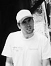

Ralph McGinnis, Maintenance


Much of the pristine Sunrise lot's beauty is due to the
hard work of Ralph McGinnis and his maintenance
crew. Ralph came
to Sunrise Studios through the "Fifth
Chance" program, sponsored by the L.A. County
Mental Health Society, designed
to give patients at
local sanitariums a chance at a normal life. Ralph
spent ten years at the Shady Hills Home,
where he
had plenty of time to study horticulture and develop
valuable custodial skills. Ralph's checkered past has
also been an asset to the Studio, as he has been a
technical consultant on several films, including First
House on
the Right and I Peel Off Your Skin, and the
schizophrenic classic Who Said That?.